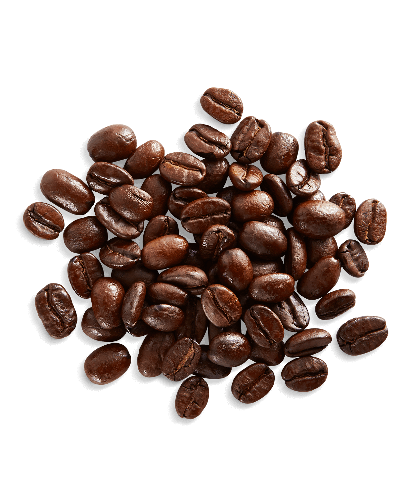

go home :)

introduction!
or the anatomy of an well-caffienated gal
I'm a rising senior in graphic design, with a minor in painting + printmaking :)
and i enjoy using :) :( :/ instead of standard emojis
fast facts!
blonde roast coffee/espresso has the most caffiene content because it gets roasted for less time and doesn't end up as crispy as dark roast, which has the least caffiene content
each shot of *regular* espresso at starbucks has 75mg of caffiene in it, and the FDA daily limit recommendation on caffiene is 400mg, so do with that information what you will!
my go-to drink on shift:
triple-shot oatmilk latte with two pumps of toffee nut
 my go-to drink off shift:
cold brew with a shot, oatmilk, and caramel drizzle
or
peach green tea
my go-to drink off shift:
cold brew with a shot, oatmilk, and caramel drizzle
or
peach green tea which is rough
because my store is out of both green tea and peach juice at the moment
i've made a bunch of work about coffee too: